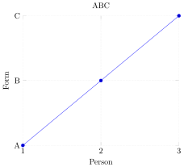
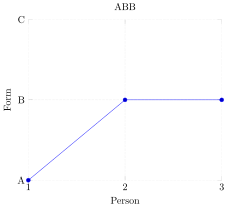
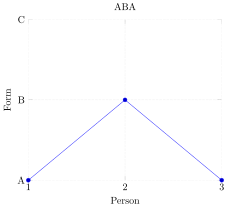

Morphological paradigms
- functions(monotonicity)
A morphological paradigm lists related forms of the same word. For example, the adjectival gradation paradigm of good is good - better - best. The inflectional paradigm of English like in the present tense is
| Person | Singular form | Plural form |
|---|---|---|
| 1 | like | like |
| 2 | like | like |
| 3 | likes | like |
German mögen, on the other hand, looks as follows:
| Person | Singular form | Plural form |
|---|---|---|
| 1 | mag | mögen |
| 2 | magst | mögt |
| 3 | mag | mögen |
You might think that paradigms can take any form you want. But that does not seem to be the case, some patterns simply do not arise. There are certain principled gaps in the linguistic typology, like holes in a Swiss cheese. The Swiss-cheese nature of language suggests that a universal is at play. In fact, we will see it is the interaction of a particular formal universal with substantive universals.
The *ABA generalization
Adjectives usually come in three degrees:
- a positive form, e.g. good or hard
- a comparative form, e.g. better or harder
- a superlative form, e.g. best or hardest
Can you think of an example of an English adjective that does not have a comparative and/or superlative form?
The contrast between good and hard already shows that the positive, comparative, and superlative are not always built the same way. In good-better-best, the comparative and superlative look very similar, but they are both different from the positive. We might call this an ABB pattern, reflecting the fact that the first form (positive) is different from the second and third (comparative and superlative). In hard-harder-hardest, all three forms are very similar. That’s an AAA pattern. Using this notation, we could also envision an ABC pattern where all three forms are highly distinct. This is instantiated by the Latin counterpart to good-better-best, which is bonus-melior-optimus.
So the set of attested adjectival gradation patterns includes AAA, ABB, and ABC. Curiously absent is anything like good-gooder-best, an AAB pattern, and good-better-goodest, an ABA pattern. The latter has attracted particular attention among linguists. The absence of such ABA patterns across all known languages is called the *ABA generalization.
The ban against ABA patterns can also be found in pronoun paradigms. If we ignore number, English has a separate pronoun form for each person. First person is I, second person is you, and third person is he/she/it. This is an ABC pattern. But looking across languages, we also find languages with AAA, AAB, and ABB. Only ABA is again curiously absent.
The absence of ABA patterns is an intriguing puzzle, and it can be given a very natural mathematical explanation.
\(^*\)ABA as a No-Crossing constraint
Some linguists have argued for a person hierarchy of the form \(1 < 2 < 3\). This means that first person is somehow more prominent or important than second person, which in turn is more important than third person. There’s several linguistic reasons for positing such a hierarchy, but for our purposes a loose analogy is sufficient: people in general care most about themselves and their peers (we), then the people they interact with (you), and everybody else is at best irrelevant and at worst an enemy (they).
If this hierarchy is indeed a substantive universal of natural languages, then a simple mathematical idea is sufficient to explain why pronoun systems can be of the form AAA, AAB, ABB, and ABC, but not ABA. But let’s start with the basic intuition before we bring in any mathematical machinery. Suppose that we line up 1, 2, 3 for person in a single horizontal line as in the figure below, with A, B, C as another horizontal line underneath it.
Using this visual format, we can represent an ABC pattern by connecting each person to the form below it. That is to say, we connect 1 to A, 2 to B, and 3 to C.
By contrast, the AAA pattern is the result of linking each person to A.
What patterns do the two pictures below represent?
Now contrast the figures above against the one below, which displays an ABA pattern.
The ABA pattern is different from the others because the lines cross at some point. Specifically, it is impossible to connect 3 to A without crossing the line that goes from 2 to B.
Linguists have noticed over the years that language, quite generally, does not like crossing lines. For instance, there is a theory known as Autosegmental phonology, which serves as the inspiration for the TSL class of \(n\)-gram grammars with tiers. In this theory, a sound in a word can occupy a position in the word as well as on a specific tier. This connection can be made explicit with an association line. But association lines are never allowed to cross. So at least for pronoun paradigms, the *ABA generalization might just be an instance of a general ban against crossing lines.
Interestingly, this ban against crossing lines corresponds to a very natural mathematical property…
Monotonicity
The figures above can be regarded as functions from \(\left \{ 1,2,3 \right \}\) to \(\left \{ A, B, C \right \}\). For example, the AAB pattern corresponds to a function \(f_{AAB}\) such that
- \(1 \mapsto A\),
- \(2 \mapsto A\),
- \(3 \mapsto B\).
Using \(\mapsto\) as above, define \(f_{AAA}\), \(f_{ABB}\), \(f_{ABC}\), and \(f_{ABA}\).
But it is not quite correct to say that these functions whose domains and co-domains are simply sets. In the pictures above, the elements of \(\left \{ 1,2,3 \right \}\) and \(\left \{ A,B,C \right \}\) are put in a left-to-right order. We aren’t just dealing with sets, we are dealing with sets that have an order defined over them. What differentiates \(f_{ABA}\) from the others is that it does not respect this order. It is the only function that is not monotonically increasing.
Let \(f: S \rightarrow T\) be a function from \(S\) to \(T\). Assume that \(\leq_S\) is an ordering of elements of \(S\), whereas \(\leq_T\) is an ordering of the elements of \(T\). Then \(f\) is monotonically increasing (or isotonic) iff \(x \leq_S y\) implies \(f(x) \leq_T f(y)\).
The function \(f_{AAB}\) is monotonically increasing because
- \(1 \leq_S 2\) and \(f(1) = A \leq_T A = f(2)\)
- \(2 \leq_S 3\) and \(f(2) = A \leq_T B = f(3)\)
- \(1 \leq_S 3\) and \(f(1) = A \leq_T B = f(3)\)
The function \(f_{ABA}\) is not monotonically increasing because \(2 \leq_S 3\) yet \(f(2) = B \not\leq_T A = f(3)\).
The ABA pattern stands out among the rest because it is not monotonically increasing. We can even visualize that using the Cartesian coordinate system, which you are probably familiar with. Here’s what an ABC patterns looks like if we represent it in a 2-dimensional space, with the \(x\)-axis encoding person (1, 2, 3) and the \(y\)-axis representing the output form (A, B, C).

As you can see, the function always goes upward, which makes it monotonically increasing. The function for ABB flattens after second person, but it is still monotonically increasing as it never dips down to a lower value.

But the diagram for ABA shows exactly such a dip from second person to third person, and that’s why the function is not monotonically increasing.

But if there’s the notion of monotonically increasing, perhaps there’s also monotonically decreasing and ABA fits that pattern? Well, you’re right that this mirror image exists. Whereas a monotonically increasing function preserves the original order, a monotonically decreasing function reverses this order. But the ABA pattern isn’t monotonically decreasing either.
Let \(f\), \(S\), \(T\), \(\leq_S\), and \(\leq_T\) be as before. Then \(f\) is monotonically decreasing (or antitonic) iff \(x \leq_S y\) implies \(f(x) \geq_T f(y)\).
Show that \(f_{ABA}\) is not monotonically decreasing.
Sometimes it does not matter whether a function is monotonically increasing or monotonically decreasing as long as it is one of the two, and in that case one simply speaks of monotonic functions. One can show that no matter how one linearly orders A, B, and C, no monotonic function can produce an ABA pattern as long as the hierarchy for person is \(1 < 2 < 3\).
Suppose that \(1 < 2 < 3\), that \(f(1) = f(3) = A\), and that \(A\), \(B\), and \(C\) are linearly ordered (e.g. \(A < B < C\) or \(C < A < B\) or \(A < C < B\)). If \(f\) is monotonic, then it must be the case that either \(f(1) \leq f(2) \leq f(3)\) or \(f(1) \geq f(2) \geq f(3)\). Either way, the fact that \(f(1) = f(3)\) entails both \(f(1) = f(2)\) and \(f(2) = f(3)\). Consequently, \(f(2) = A\). Since that is not the case for the ABA pattern, it cannot be produced by a monotonic function.
The *ABA generalization for pronouns thus follows from the interaction of a substantive universal and a formal universal:
- Substantive universal: All languages use a person hierarchy \(1 < 2 < 3\).
- Formal universal: For every morphological paradigm, the mapping from the underlying hierarchy to the output forms must be monotonic.
Show that monotonicity also explains the absence of adjectival gradation paradigms like good-better-goodest if one assumes the hierarchy \(\mathrm{positive} < \mathrm{comparative} < \mathrm{superlative}\). Explain why this is an intuitively plausible hierarchy.
Earlier I mentioned briefly that no language seems to allow AAB as an adjectival gradation pattern. Is this predicted by monotonicity? If not, is this an undergeneration or an overgeneration problem?
You might wonder why we restated the No-Crossing constraint in terms of the mathematical property of monotonicity. Doesn’t the former get the job done just as well? In the case at hand, certainly. But monotonicity is a more abstract property, and as we will see in the next two units, this abstractness allows it to be easily generalized to a number of phenomena which the No-Crossing constraint has little to say about.
Recap
- Across languages, morphological paradigms exhibit curious gaps: a logically conceivable pattern does not seem to be instantiated in any language.
- The *ABA generalization states that paradigms do not contain patterns where two forms look the same (or similar) but forms in-between look very different.
- The *ABA generalization can be decomposed into two universals:
- The formal universal is the requirement that morphological paradigms should be monotonic functions.
- The substantive universal is the particular order that underlies the paradigm (e.g. \(1 < 2 < 3\) or \(\mathrm{positive} < \mathrm{comparative} < \mathrm{superlative}\)).